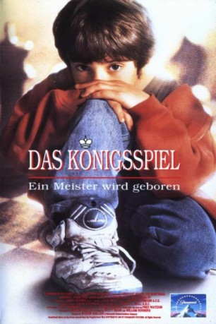

#12178 Das Königsspiel
Alternativ: Searching for Bobby Fischer (Englischer Titel)
Auszeichnungen: für 1 Oscars nominiert
 
 IMDB-Wertung: 7.4 / 10
IMDB-Wertung: 7.4 / 10  Tomatometer: 100
Tomatometer: 100  Metascore: 89
Metascore: 89 
Der junge Josh ist fasziniert vom Schachspielen. Sein Vater möchte zwar lieber einen Baseball-Star aus ihm machen, aber Josh bekommt seine Chance.Er nutzt sie glänzend und entpuppt sich als wahres Schach-Genie. Doch der Weg zum Champion ist hart für einen verträumten Siebenjährigen mit einem ehrgeizigem Vater. Josh erlebt Höhen und Tiefen. Ausgerechnet in dieser Situation trifft er bei einem Turnier auf seinen Angstgegner und Herausforderer Jonathan. Ein dramatischer Kampf beginnt, bei dem die Gegner nicht nur am Brett sitzen…
Jahr: 1993
Dauer: 109 Minuten
FSK: 6
Land: USA Studio: Paramount PicturesTonspuren: - , - , - , - ,
Untertitel: Englisch,
Auflösung: 1080p (1920x1080) Größe: 8325 MB
Genre: Drama, Biographie
Regisseur: Steven Zaillian
Drehbuch: Fred Waitzkin, Steven Zaillian
Soundtrack: James Horner
Darsteller:
- Max Pomeranc als Josh Waitzkin
 Joe Mantegna als Fred Waitzkin
Joe Mantegna als Fred Waitzkin Joan Allen als Bonnie Waitzkin
Joan Allen als Bonnie Waitzkin Ben Kingsley als Bruce Pandolfini
Ben Kingsley als Bruce Pandolfini Laurence Fishburne als Vinnie
Laurence Fishburne als Vinnie Robert Stephens als Poe's Teacher
Robert Stephens als Poe's Teacher David Paymer als Kalev
David Paymer als Kalev- Hal Scardino als Morgan
 William H. Macy als Tunafish Father
William H. Macy als Tunafish Father Dan Hedaya als Tournament Director
Dan Hedaya als Tournament Director Laura Linney als School Teacher
Laura Linney als School Teacher Anthony Heald als Fighting Parent
Anthony Heald als Fighting Parent Josh Mostel als Chess Club Regular
Josh Mostel als Chess Club Regular- Josh Kornbluth als Chess Club Regular
 Tony Shalhoub als Chess Club Member
Tony Shalhoub als Chess Club Member Austin Pendleton als Asa Hoffman
Austin Pendleton als Asa Hoffman Tom McGowan als Reporter
Tom McGowan als Reporter- William Colgate als Statistician
 Tony De Santis als Journalist
Tony De Santis als Journalist John Bourgeois als Gym Parent
John Bourgeois als Gym Parent Maria Ricossa als Gym Parent
Maria Ricossa als Gym Parent- Nathan Carter als Josh's Teammate
- Bobby Fischer als Himself
 Matt Birman als Father (uncredited)
Matt Birman als Father (uncredited)- Michael Nirenberg als Jonathan Poe
- Vasek Simek als Russian Park Player
- Steven Randazzo als Man of Many Signals
- Chelsea Moore als Katya Waitzkin
- Ona Fletcher als Reporter
- Kamran Shirazi als Himself
- Joel Benjamin als Himself
- Roman Dzindzichashvili als Himself
- Jerry Poe McClinton als Park Player
- Matt De Matt als Night Park Player
- Vincent Smith als Washington Square Patzers
- Jerry Rakow als Washington Square Patzers
- R.D. Reid als Final Tournament Director
- Anthony McGowen als Park Dealer
- Katya Waitzkin als 82nd Girl
- Ryder Fleming-Jones als Petey
- Harris Krofchick als Running Chess Kid
- Caroline Yeager als Screaming Mom
- Andrew Sardella als Josh's Syracuse Opponent
- Nicholas Taylor als Birthday Friend
- Jonathan Fazio als Birthday Friend
- Nicky Mellina als Birthday Friend
- Philip Neiman als Birthday Friend
- Elizabeth Gropman als Birthday Friend
- Robert Anthony Carswell als Parent pacing in basement locker showing body only (uncredited)
- James Garrigan als Cyclist (uncredited)
Datei: X:\1993\Königsspiel, Das (1993, FSK6, 1920x1080).mkv seit 30.12.2019
Festplatte: Gemischt-01+Anime
 Es gibt insgesamt 68 Filme in der Gruppe '1993'
Es gibt insgesamt 68 Filme in der Gruppe '1993'